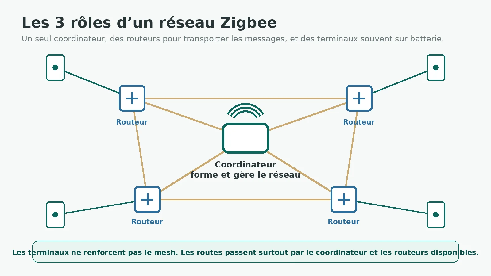
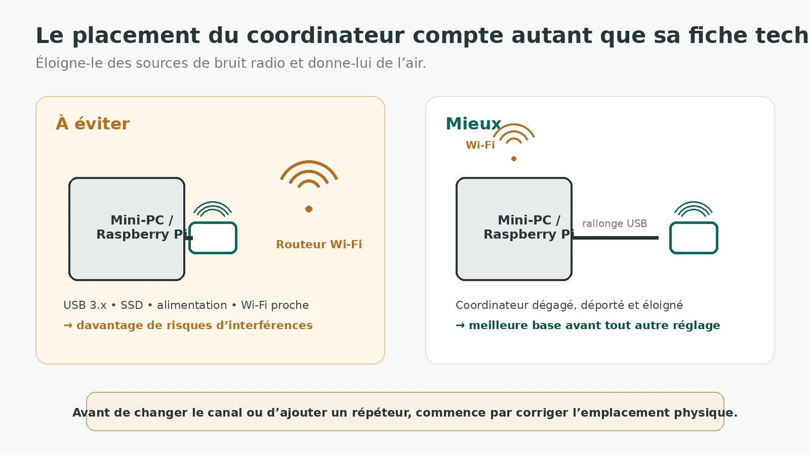
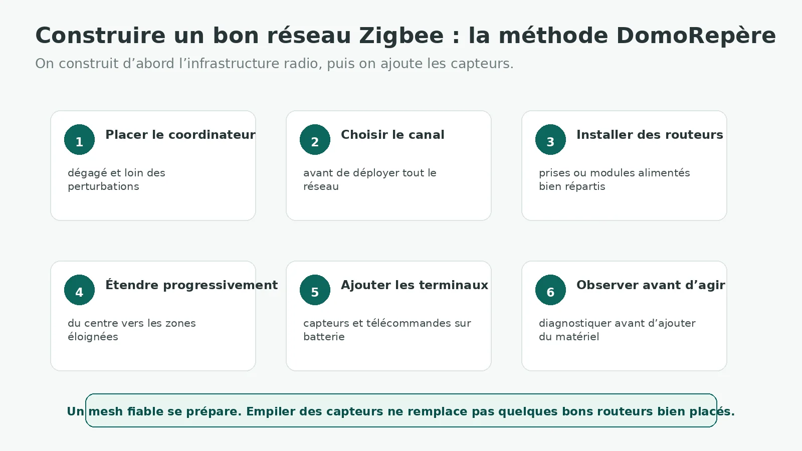

Zigbee a une réputation plutôt simple : on ajoute une clé, quelques prises et des capteurs, puis le réseau maillé est censé s’occuper du reste. C’est vrai… jusqu’au jour où un capteur disparaît, qu’un appairage ne passe plus ou qu’une pièce éloignée devient imprévisible.
Le problème n’est pas que Zigbee soit fragile. C’est plutôt qu’un réseau maillé doit être construit. Le coordinateur forme le réseau, les routeurs transportent les messages et les terminaux — souvent sur batterie — s’appuient sur cette infrastructure. Si l’un de ces rôles est mal compris, on finit vite par diagnostiquer la mauvaise cause.
1. Qu’est-ce que le protocole Zigbee ?
Zigbee est une solution de communication sans fil basse consommation conçue pour les objets connectés. Dans la maison, on le rencontre surtout pour les capteurs d’ouverture, de température ou de mouvement, les prises, les ampoules, les micromodules, les télécommandes et de nombreux automatismes.
Le réseau Zigbee domestique classique utilise principalement la bande 2,4 GHz et s’appuie sur IEEE 802.15.4 pour la couche radio. Contrairement au Wi‑Fi, il ne cherche pas à transporter de gros volumes de données : son travail consiste surtout à faire circuler des commandes et de petits états avec une consommation réduite.
La particularité intéressante est le maillage. Un appareil n’a pas toujours besoin de joindre directement le coordinateur : le message peut passer par d’autres nœuds capables de router. C’est ce qui permet à une installation de couvrir progressivement un logement — à condition d’avoir les bons appareils aux bons endroits.
Si ton besoin est d’abord de comparer Zigbee à Z-Wave, au Wi‑Fi, à Thread ou à Matter, ce n’est pas le sujet de ce guide : le comparatif des protocoles DomoRepère est fait pour ça. Ici, on reste volontairement sur le fonctionnement technique de Zigbee.
2. Coordinateur, routeurs et terminaux : les trois rôles à comprendre
Le coordinateur Zigbee
Un réseau Zigbee possède un seul coordinateur. C’est lui qui forme le réseau, choisit ses paramètres de départ et assure des responsabilités supplémentaires de gestion et de sécurité. Dans une installation Home Assistant, il s’agit souvent d’un adaptateur USB ou d’un coordinateur relié localement à la machine.
Le coordinateur est essentiel, mais il ne doit pas devenir le seul point radio sur lequel tous les appareils essaient de s’appuyer. Un réseau qui repose presque uniquement sur lui ressemble davantage à une étoile qu’à un véritable mesh.
Les routeurs Zigbee
Les routeurs forment la colonne vertébrale du réseau. Ils restent disponibles pour recevoir et relayer des messages et peuvent aussi accueillir des appareils terminaux comme enfants.
Ils sont généralement alimentés en permanence : prises, micromodules ou certains luminaires. Mais attention à un raccourci fréquent : alimenté sur secteur ne signifie pas automatiquement excellent routeur. Le rôle réel, la qualité radio et le comportement de routage dépendent du produit et de son firmware.
Les appareils terminaux
Les terminaux — Zigbee End Devices — sont des feuilles du réseau. Ils communiquent via un parent et ne relaient pas les messages des autres appareils. Beaucoup de capteurs sur batterie appartiennent à cette catégorie et peuvent éteindre leur radio lorsqu’ils sont au repos pour économiser l’énergie.
C’est pour cette raison qu’ajouter vingt capteurs de température ne renforce pas forcément ton réseau. Ils consomment une place et utilisent l’infrastructure existante, mais ils ne créent pas les routes dont ils ont eux-mêmes besoin.

3. Comment fonctionne réellement le maillage Zigbee ?
Quand un routeur ou un terminal rejoint le réseau, il ne reçoit pas une route gravée dans le marbre pour toute sa vie. Le réseau peut découvrir et utiliser différents chemins selon les liens disponibles. C’est l’un des intérêts du mesh : un appareil éloigné peut passer par un routeur intermédiaire plutôt que tenter de joindre directement le coordinateur.
Mais le mot « maillé » ne signifie pas que tout appareil parle à tous les autres. Les terminaux ont notamment un parent, et les routeurs sont ceux qui assurent le transport des messages à travers le réseau.
En pratique, deux conséquences sont importantes :
- la répartition des routeurs compte plus que leur nombre brut ;
- supprimer ou couper un routeur important peut perturber temporairement plusieurs appareils, le temps que le réseau se réorganise — et certains produits gèrent cette transition mieux que d’autres.
« Mon capteur est à trois mètres du coordinateur, donc le réseau est bon » ?
Pas forcément. La distance seule ne dit rien sur les interférences, les obstacles, le parent choisi ni la qualité des autres chemins disponibles.
4. Quels appareils font de bons routeurs Zigbee ?
Pour construire un mesh, je privilégierais des équipements alimentés en permanence et répartis dans le logement : prises, micromodules, certains relais ou luminaires fixes. L’objectif n’est pas de mettre un répéteur dans chaque pièce, mais de créer des points de passage stables.
Quelques précautions évitent de construire le réseau sur de mauvaises fondations :
- une ampoule qui sert de routeur n’est utile que si son alimentation reste présente ;
- une prise connectée que l’on débranche régulièrement n’est pas un excellent pilier de réseau ;
- tous les appareils secteur ne routent pas forcément de la même manière ;
- un routeur bien placé entre deux zones peut être plus utile que plusieurs appareils regroupés au même endroit.
Commence par identifier le besoin : routeur permanent, prise utile, micromodule ou capteur. N’achète pas un « répéteur » par réflexe tant que le placement du coordinateur et la structure du réseau n’ont pas été vérifiés.
Lien partenaire : DomoRepère peut percevoir une commission sur certains achats, sans surcoût pour toi.
Voir le matériel Zigbee chez Domadoo5. Où placer le coordinateur Zigbee ?
C’est probablement la correction la plus rentable avant d’acheter quoi que ce soit.
Un coordinateur USB branché directement derrière un mini-PC, collé à un SSD, à un port USB 3.x ou à un routeur Wi‑Fi peut subir davantage de bruit électromagnétique et radio. Home Assistant comme Zigbee2MQTT recommandent d’éloigner le coordinateur de ces sources d’interférences, notamment à l’aide d’une rallonge USB correctement blindée.
Je chercherais donc d’abord un emplacement :
- dégagé, plutôt que coincé derrière une machine ou dans un coffret métallique ;
- éloigné du point d’accès Wi‑Fi et des périphériques USB 3.x ;
- pas collé à des alimentations, SSD ou câbles fortement perturbateurs ;
- si possible assez central par rapport au premier noyau de routeurs.

6. Zigbee et Wi‑Fi : pourquoi peuvent-ils se gêner ?
Le Zigbee résidentiel 2,4 GHz partage une partie du spectre avec le Wi‑Fi 2,4 GHz. Les deux technologies ne découpent pas la bande de la même façon : Zigbee utilise des canaux plus étroits — de 11 à 26 dans cette bande — alors qu’un canal Wi‑Fi occupe une largeur beaucoup plus importante.
Le résultat est simple : selon les canaux choisis et la puissance des réseaux voisins, un coordinateur Zigbee peut se retrouver dans une zone radio très chargée.
Faut-il changer le canal Zigbee ?
Pas automatiquement. Il n’existe pas un « meilleur canal Zigbee » valable dans toutes les maisons. Home Assistant recommande d’ailleurs de ne pas modifier le canal ZHA par défaut sans raison et de commencer par les bonnes pratiques de placement et d’interférence.
Si tu crées un réseau neuf, réfléchir au plan radio dès le départ est pertinent. Si ton réseau existe déjà et fonctionne globalement, je ne changerais pas de canal juste parce qu’un tableau trouvé sur Internet affirme qu’un autre est meilleur.
7. Comment construire un bon réseau Zigbee dès le départ ?
Si je devais créer un réseau aujourd’hui, je procéderais dans cet ordre :
Avant d’appairer cinquante appareils, je l’éloigne des sources de bruit et je choisis un emplacement cohérent.
Je regarde l’environnement Wi‑Fi plutôt que d’appliquer une valeur universelle.
Des prises ou micromodules répartis forment l’ossature du réseau.
Je construis un chemin radio plutôt que de commencer directement par le capteur au fond du garage.
Ils rejoignent un réseau qui possède déjà des parents et des routes utilisables.
Un appareil qui rate une commande une fois ne justifie pas immédiatement trois répéteurs supplémentaires.

Cette méthode évite aussi un problème fréquent : appairer tous les capteurs près du coordinateur, puis les déplacer à leur emplacement définitif en espérant que tout se reconstruise instantanément. Zigbee sait réorganiser des routes, mais autant lui donner dès le départ une infrastructure cohérente.
8. Comment diagnostiquer un réseau Zigbee instable ?
Quand un appareil devient indisponible ou répond mal, je ne commence pas par accuser le produit. Je cherche à déterminer où se situe la panne.
1. Le problème concerne-t-il un seul appareil ?
Vérifie la batterie, l’alimentation, le firmware éventuel et la qualité de son emplacement. Un capteur isolé qui décroche n’indique pas forcément un défaut global du mesh.
2. Plusieurs appareils d’une même zone sont-ils touchés ?
Regarde les routeurs présents dans cette zone. Une prise débranchée ou un module supprimé peut avoir retiré un chemin important.
3. Les problèmes touchent-ils surtout l’appairage ou tout le réseau ?
Un coordinateur mal placé, une forte interférence 2,4 GHz, un firmware ancien ou un adaptateur dépassé peuvent créer des symptômes plus larges.
4. La carte réseau permet-elle de conclure ?
Une carte de réseau est utile pour visualiser le coordinateur, les routeurs, les terminaux et certains liens. Zigbee2MQTT permet par exemple de générer une network map avec des valeurs de qualité de lien et des routes actives.
Mais je n’en ferais pas un verdict. Le LQI ou la carte prise à un instant donné ne résument pas à eux seuls la stabilité d’un réseau réel. Ce sont des indices à croiser avec les symptômes, l’emplacement et l’historique.
Le bon diagnostic n’est pas : « mon LQI est mauvais ».
La vraie question est : quel appareil ne communique plus correctement, par quel type de lien, depuis quand, et qu’est-ce qui a changé autour de lui ?
9. Zigbee avec Home Assistant : ZHA ou Zigbee2MQTT ?
Les deux approches permettent de construire un réseau Zigbee avec Home Assistant, mais leur architecture n’est pas identique.
| ZHA | Zigbee2MQTT | |
|---|---|---|
| Principe | Intégration Zigbee directement dans Home Assistant | Service Zigbee séparé relié à Home Assistant via MQTT |
| Coordinateur | Adaptateur compatible avec zigpy / ZHA | Adaptateur compatible avec Zigbee2MQTT |
| Intégration HA | Native dans l’interface Home Assistant | Via MQTT Discovery et l’intégration MQTT |
| Choix | À faire selon le matériel, les appareils à intégrer et la manière dont tu veux administrer le réseau — pas sur un classement universel. | |
ZHA peut remplacer de nombreuses passerelles propriétaires et crée directement le réseau depuis Home Assistant. Zigbee2MQTT fonctionne comme une couche séparée et publie les appareils vers Home Assistant via MQTT.
Je ne transformerais pas cette section en duel. Si ton objectif est de savoir lequel correspond le mieux à ton installation, ce sujet mérite un guide dédié avec les mêmes appareils testés sur les deux solutions.
10. Zigbee 4.0 et Suzi : qu’est-ce qui change en 2026 ?
Zigbee continue d’évoluer. La Connectivity Standards Alliance a annoncé Zigbee 4.0 en novembre 2025 avec des évolutions de sécurité, de mise en service, de stabilité réseau et de compatibilité. La spécification reste rétrocompatible avec Zigbee 3.0 et Smart Energy.
L’évolution la plus visible est l’ouverture vers le sub‑GHz avec Suzi. Cette extension reprend le routage maillé Zigbee sur des fréquences plus basses afin de viser davantage de portée et certains environnements plus exigeants. Le programme de certification des produits Suzi a officiellement ouvert le 2 septembre 2026.
Pour autant, cela ne signifie pas que ton réseau Zigbee 2,4 GHz actuel devient obsolète. La CSA présente Suzi comme une extension complémentaire, pas comme un remplacement du Zigbee classique. En septembre 2026, le sujet est surtout important pour comprendre où évolue l’écosystème, pas pour jeter ses capteurs actuels.
11. Les erreurs que j’éviterais sur un réseau Zigbee
- Brancher le coordinateur directement derrière le serveur puis chercher le problème uniquement dans les réglages.
- Construire un réseau presque uniquement avec des capteurs sur pile et s’étonner que le maillage reste pauvre.
- Utiliser des ampoules coupées physiquement comme infrastructure principale.
- Changer de canal au hasard sans regarder l’environnement Wi‑Fi ni essayer d’abord un meilleur placement.
- Ajouter des répéteurs sans diagnostic : plus d’appareils n’est pas toujours synonyme de meilleur réseau.
- Supposer qu’un appareil Zigbee sera parfaitement supporté parce qu’il porte le logo Zigbee : les fonctions réellement exposées peuvent encore dépendre du fabricant, du coordinateur et de la couche logicielle.
12. À quoi ressemble un bon réseau Zigbee ?
Un bon réseau Zigbee n’est pas celui qui affiche le plus de lignes sur une carte. C’est celui qui continue à faire son travail quand tu n’es plus en train de le regarder.
Je chercherais donc une architecture simple : un coordinateur bien placé, plusieurs routeurs permanents répartis dans le logement, des terminaux sur batterie qui trouvent facilement un parent et un plan radio cohérent avec le Wi‑Fi environnant.
Ensuite seulement, j’utiliserais les outils de diagnostic pour affiner ce qui pose réellement problème.
Et si tu débutes encore dans la structure générale d’une installation, commence par le guide pour débuter en domotique. Le protocole n’est qu’une partie de l’architecture globale.
Questions fréquentes
Un appareil Zigbee sur secteur est-il toujours un routeur ?
Non. Beaucoup d’appareils alimentés en permanence sont conçus comme routeurs, mais ce n’est pas une règle absolue à appliquer à n’importe quel produit. Vérifie le comportement réel du modèle et ne bâtis pas une installation critique sur une hypothèse.
Un capteur Zigbee sur pile améliore-t-il le maillage ?
En général non. Les capteurs sur pile sont le plus souvent des terminaux, parfois endormis, qui s’appuient sur un coordinateur ou un routeur parent sans relayer les messages du reste du réseau.
Quel est le meilleur canal Zigbee ?
Il n’existe pas de réponse universelle. Le bon choix dépend surtout de l’occupation locale de la bande 2,4 GHz, de tes réseaux Wi‑Fi et de l’environnement radio autour du coordinateur.
Une rallonge USB améliore-t-elle vraiment Zigbee ?
Elle peut fortement aider lorsqu’un coordinateur USB est trop proche d’un ordinateur, d’un SSD, d’un port USB 3.x ou d’autres sources de perturbations. C’est une recommandation commune aux documentations ZHA et Zigbee2MQTT.
Faut-il appairer un appareil Zigbee à son emplacement définitif ?
Ce n’est pas une obligation absolue, mais construire progressivement le réseau et rejoindre les appareils dans une zone déjà couverte évite de dépendre d’une reconstruction ultérieure des routes. Pour un appareil difficile à joindre, l’appairage près du coordinateur ou d’un routeur peut cependant rester utile pour le diagnostic.
ZHA ou Zigbee2MQTT : lequel est le meilleur ?
Il n’y a pas de gagnant universel. ZHA est directement intégré à Home Assistant ; Zigbee2MQTT fonctionne comme un service séparé via MQTT. Le choix dépend surtout de ton matériel, des appareils visés et de la façon dont tu souhaites administrer le réseau.
- Connectivity Standards Alliance — Zigbee
- CSA — Zigbee 4.0 et Suzi
- CSA — ouverture de la certification Suzi, 2 septembre 2026
- Home Assistant — intégration ZHA et bonnes pratiques Zigbee
- Zigbee2MQTT — améliorer portée et stabilité
- Zigbee2MQTT — network map et qualité des liens
- Silicon Labs — coordinateur, routeurs et end devices